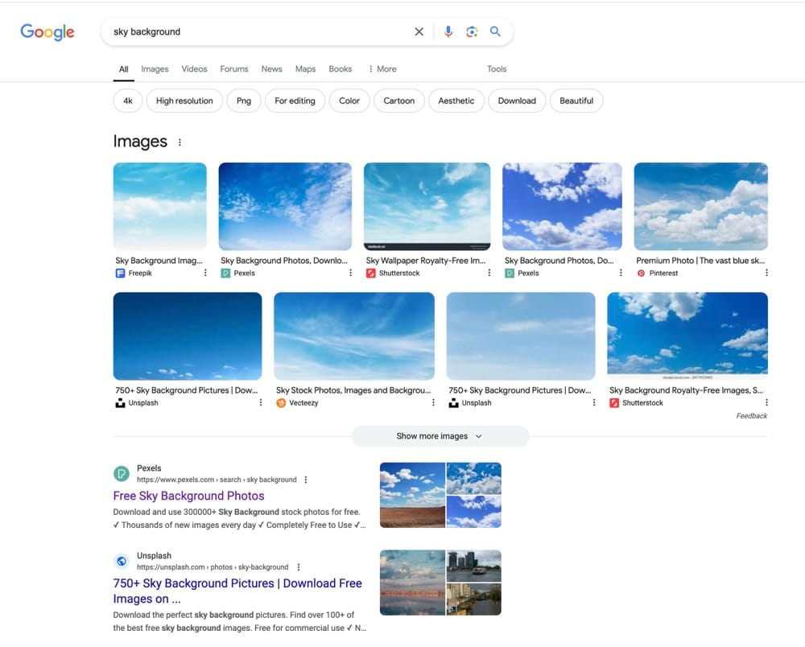
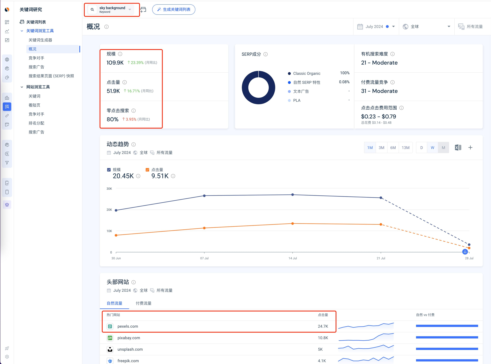
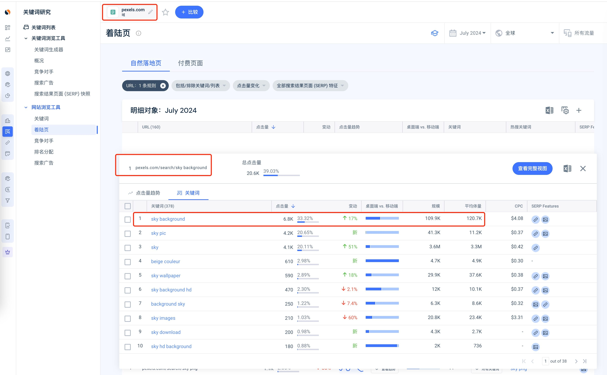
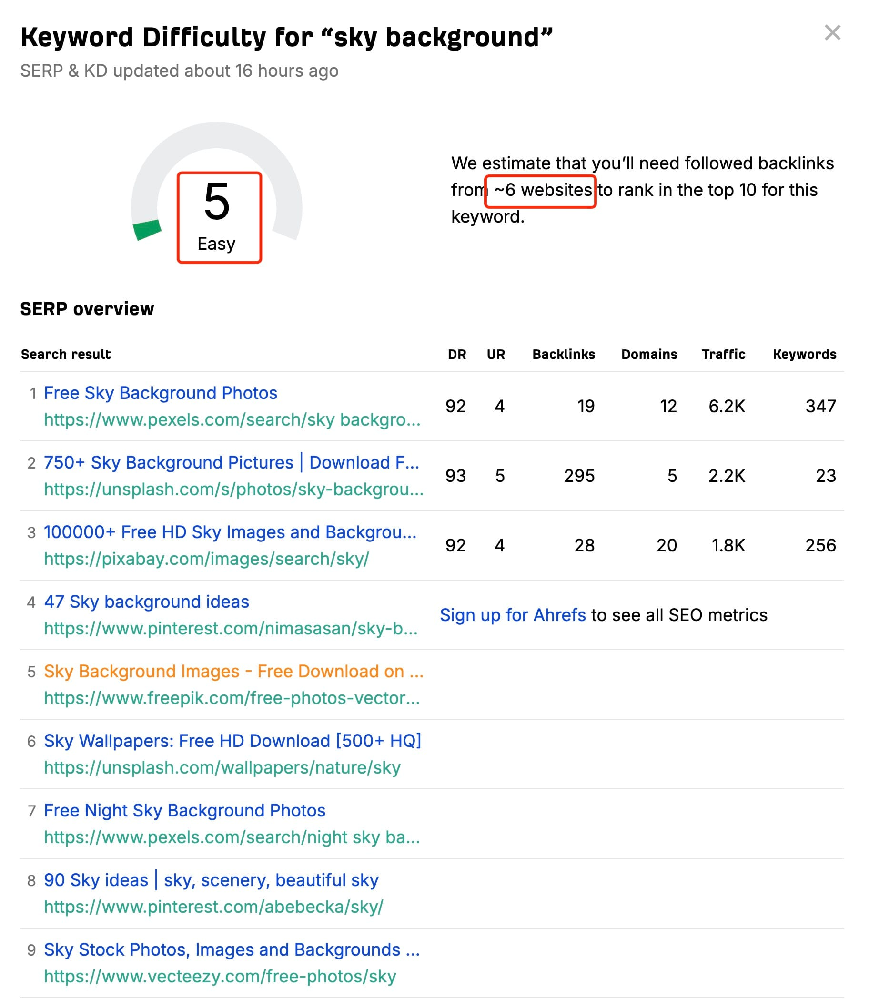

图片类关键词分析
日期：2024-08-15
今天跟大家聊聊一些图片类关键词的数据怎么看，怎么判断能不能做，要不要做。
我们拿 sky background 这个关键词来说，PC 端使用谷歌搜索，会发现谷歌能够识别到这是图片搜索需求，所以直接出现了“images”模块，直接给你显示了一些图片。
这时候大部分人可能直接就会点击图片列表，进入谷歌图片搜索了。少部分人会点击下面的网站。

那我们就来判断一下，这个关键词，点击下面网站的比例大概是多少。换句话说，我们看一看，假如你做了一个网站，拿到了这个词的第一名，能够获取多少流量。
先在 Similarweb 看这个关键词的概况，Similarweb 估算，这个词的月曝光量在 109.9K，月点击量在 51.9K。其中排名第一的 pexels.com拿到了 24.7K 点击量。

注意，这里的 24.7K 可能包含了 pexels.com多个页面拿到的点击量。如果只看 https://www.pexels.com/search/sky%20background/ 这个页面，会发现从 sky background 这个关键词只拿到了 6.8K 的点击。

现在，我们就可以计算一下比例了，如果是在“Images”模块下的第一名，能够拿到曝光量中的(6.8/109.9)x100% = 6.18%。
也就是说，你别看这个关键词每个月有 109K 的搜索量（曝光量 = 搜索量），但是即使你排到了首页，点击率也才 6.18%。
那么这种词，如果我们要去做网站，就有点吃力不讨好了。除非你真的没别的词可以去做了，否则别选择这种词。
所以哥飞在判断一个词是否能做时，最重要的一步是直接谷歌搜索看看搜索结果长啥样。图片类、视频类、商品类、数学公式计算类关键词等等，所有这种谷歌直接在搜索结果最前面直接把用户想要的给呈现出来的关键词，都要慎重考虑。
如果你在 Ahrefs 查询关键词难度，会发现难度很低，只要几个外链就能够让你的网站进入首页。但其实这是 Ahrefs 的算法局限性导致的计算失误，实际上难度并没有这么低。看看搜索结果，一个个都是大站的内页。我们一个新网站，还是比较难突破这些大站的封锁，进入前三名的。

好了，今天的小课堂就到这里了。